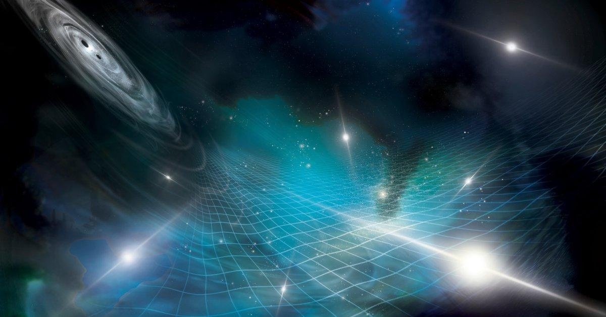

Scientists 'Hear' Ripples in the Fabric of Our UniverseNEW YORK — Scientists have observed for the first time the faint ripples caused by the motion of black holes that are gently stretching and squeezing everything in the universe. They reported Wednesday that they were able to “hear” what are called low-frequency gravitational waves — changes in the fabric of the universe that are created by huge objects moving around and colliding in space. “It’s really the first time that we have evidence of just this large-scale motion of everything in the universe,” said Maura McLaughlin, co-director of NANOGrav, the research collaboration that published the results in The Astrophysical Journal Letters. Einstein predicted that when really heavy objects move through spacetime — the fabric of our universe — they create ripples that spread through that fabric. Scientists sometimes liken these ripples to the background music of the universe. In 2015, scientists used an experiment called LIGO to detect gravitational waves for the first time and showed Einstein was right. But so far, those methods have only been able to catch waves at high frequencies, explained NANOGrav member Chiara Mingarelli, an astrophysicist at Yale University. Those quick “chirps” come from specific moments when relatively small black holes and dead stars crash into each other, Mingarelli said. Read more: A Brief History of the Search for Gravitational Waves In the latest research, scientists were searching for waves at much lower frequencies. These slow ripples can take years or even decades to cycle up and down, and probably come from some of the biggest objects in our universe: supermassive black holes billions of times the mass of our sun. Galaxies across the universe are constantly colliding and merging together. As this happens, scientists believe the enormous black holes at the centers of these galaxies also come together and get locked into a dance before they finally collapse into each other, explained Szabolcs Marka, an astrophysicist at Columbia University who was not involved with the research. The black holes send off gravitational waves as they circle around in these pairings, known as binaries. “Supermassive black hole binaries, slowly and calmly orbiting each other, are the tenors and bass of the cosmic opera,” Marka said. No instruments on Earth could capture the ripples from these giants. So “we had to build a detector that was roughly the size of the galaxy,” said NANOGrav researcher Michael Lam of the SETI Institute. The results released this week included 15 years of data from NANOGrav, which has been using telescopes across North America to search for the waves. Other teams of gravitational wave hunters around the world also published studies, including in Europe, India, China and Australia. The scientists pointed telescopes at dead stars called pulsars, which send out flashes of radio waves as they spin around in space like lighthouses. These bursts are so regular that scientists know exactly when the radio waves are supposed to arrive on our planet — “like a perfectly regular clock ticking away far out in space,” said NANOGrav member Sarah Vigeland, an astrophysicist at the University of Wisconsin-Milwaukee. But as gravitational waves warp the fabric of spacetime, they actually change the distance between Earth and these pulsars, throwing off that steady beat. By analyzing tiny changes in the ticking rate across different pulsars — with some pulses coming slightly early and others coming late — scientists could tell that gravitational waves were passing through. The NANOGrav team monitored 68 pulsars across the sky using the Green Bank Telescope in West Virginia, the Arecibo telescope in Puerto Rico and the Very Large Array in New Mexico. Other teams found similar evidence from dozens of other pulsars, monitored with telescopes across the globe. So far, this method hasn’t been able to trace where exactly these low-frequency waves are coming from, said Marc Kamionkowski, an astrophysicist at Johns Hopkins University who was not involved with the research. Instead, it’s revealing the constant hum that is all around us — like when you’re standing in the middle of a party, “you’ll hear all of these people talking, but you won’t hear anything in particular,” Kamionkowski said. The background noise they found is “louder” than some scientists expected, Mingarelli said. This could mean that there are more, or bigger, black hole mergers happening out in space than we thought — or point to other sources of gravitational waves that could challenge our understanding of the universe. Researchers hope that continuing to study this kind of gravitational waves can help us learn more about the biggest objects in our universe. It could open new doors to “cosmic archaeology” that can track the history of black holes and galaxies merging all around us, Marka said. “We’re starting to open up this new window on the universe,” Vigeland said. ___ The Associated Press Health and Science Department receives support from the Howard Hughes Medical Institute’s Science and Educational Media Group. The AP is solely responsible for all content. - Supreme Court Rules Against Race-Based Affirmative Action - How the Affirmative Action Decision Affects the AAPI Community - Now’s The Time to Bring Up Menopause At Work - The Case Against Engagement Rings - The Climate Rifts Biden and Modi Couldn't Heal - The Long, Complicated, and Very Pink History of Barbiecore - How Andrew Huberman Got America to Care About Science - Podcast: Elliott Page Steps Into His Truth - Tackling Climate Change Can Save Hospitals Money |
 |